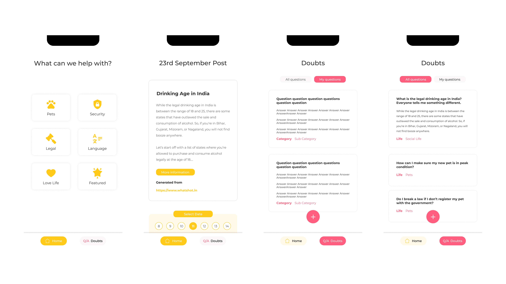

The Problem
An NGO in Vellore came to us with something genuinely hard: adolescents had no secure, credible place to get information about the world they were growing up in, or about themselves.
The problem wasn't scarcity; it was the opposite. Information overload, uneven credibility, and a social context where asking certain questions out loud carries real cost. In an orthodox society a teenager can't ask a parent about half of what they need to know. So they don't ask, or they ask the internet and take whatever it gives them.
My Role
Solo Designer
On a team of five; everyone else was a developer. Identity, user flows, design system, all screens.
The Identity
Design Style
The design system stayed deliberately plain; clean readable type, soothing simple palette, scalable to both mobile and web. It's a text-heavy product about difficult things. Restraint was the point.
The Logo
We wanted warm, welcoming, and instantly recognisable. We played with a simple "H" for recognition and a house for safety, and the final mark combines them — the letter sitting inside the shape. The idea underneath: your house is your hope.

The decision
The whole product turns on one choice: anonymity is the feature, not a setting.
Every instinct in social product design pushes toward identity: profiles, reputation, follower counts, the things that drive engagement. All of them would have destroyed this. A teenager asking something they're afraid to ask their parents will not attach their name to it, however good the answer is.
So the entire experience sits behind an anonymous cloak by default. No profile-building, no social capital, no reason to perform
What I built
Visually separate learning from asking
Reading a post and asking a question are different emotional acts; one is passive and safe, the other takes nerve. Collapsing them into one feed would have made asking feel more exposed than it needed to. The design system draws a clear line, and the product has exactly two tabs.
Home
A post a day, by category. Pets, relationships, sexuality, language, whatever the NGO identified as needed. Every post carries its source, so users know where information came from. A short AI summary for the gist, full article for depth. A calendar so you can reach any day's post, at your own pace.
The design system stayed deliberately plain — clean readable type, soothing simple palette, scalable to both mobile and web. It's a text-heavy product about difficult things. Restraint was the point.
Doubts
Browse what others have asked, filtered by category, answered by verified NGO professionals. Ask your own in one tap. The system auto-categorises so it routes to the right person, with manual override if it guesses wrong.

Almost every engagement pattern I knew would have made this product worse. Sometimes the job is knowing which best practices to throw out; and I'd like to say I knew that going in, but honestly the NGO knew their users better than I did and I mostly had the sense to listen.